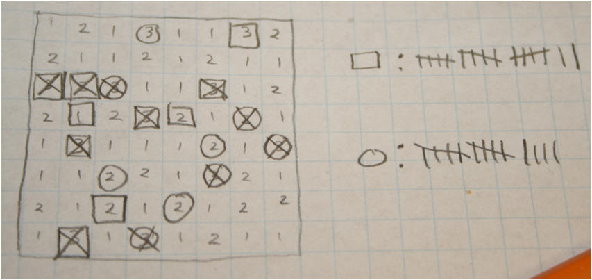
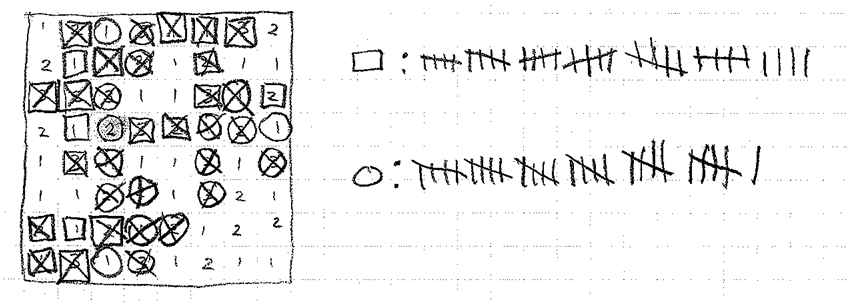

|
Paper Pen-guins |
| Overview |
Paper Pen-guins is my pencil-/pen-and-paper adaptation of the game Pingvinas, a.k.a. “Hey! That’s My Fish!” by Alvydas Jakeliunas and Günter Cornett.
| Rules |
The board is an 8x8 square grid. (Graph paper is recommended.) Each grid cell contains a number indicating point value. Eleven cells have 3 points, Twenty-one cells have 2 points, and the remaining thirty-two cells have 1 point. (These points may be placed by random process, or players may take turns, first placing eleven 3’s, then twenty-one 2’s, and finally filling remaining 1’s.)
A player-1/player-2 piece is represented as a square/circle surrounding a cell’s point value. (Although not required, players may find use of different colored pens helpful.) Players take turns placing pieces until each player has four pieces on the board. Players then take turns making moves until one player has no legal move, or both players agree on the game’s final outcome. Players then tally points that would be scored in remaining legal moves.
For a legal move:
A player chooses a piece and scores the points of that piece’s cell. (Points may be tallied to the side of the board.)
The player then crosses out that cell, forming an “X” from opposite cell corners.
Finally, if the player can, the player must “move” the piece by redrawing the piece a Chess queen’s move away (any number of spaces horizontally, vertically, or diagonally) such that the piece does not move on or beyond another piece or crossed-out cell.
| Examples |


Todd Neller,
http://cs.gettysburg.edu/~tneller
October 21st, 2009